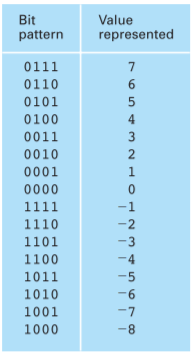

The most popluar system for representing integers within today's computers is two's complement notation. This system uses a fixed number of bits to represent each of the values in the system. In today's equipment, it is common to use a two's complement system in which each value is represented by a pattern of 32 bits. Such a large system allows a wide range of numbers to be represented but is awkward for demonstration purposes. Thus, to study the properties of two's complement systems, we will concentrate on smaller systems.
The twos complement for is :
The twos complement for is :
The twos complement binary addition of the 2 numbers is :
The base ten addition of the 2 numbers is :
*-----------------------------------------------------------------------------*